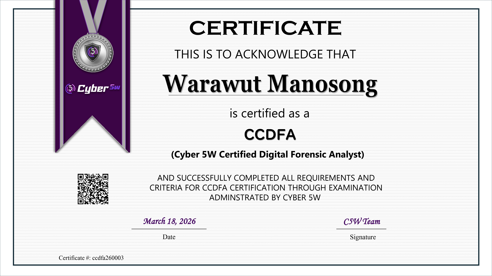

<!DOCTYPE html>
<html lang="en">
<head>
    <meta charset="UTF-8">
    <meta name="viewport" content="width=device-width, initial-scale=1.0">
    <title>CCDFA Review — Cyber5W Certified Digital Forensic Analyst | Chicken0248</title>
    <meta name="description" content="A detailed review of the Cyber5W Certified Digital Forensic Analyst (CCDFA) — covering the on-demand course, hands-on exam, the live interview component, and honest takeaways on whether it's worth it for your digital forensics journey." />
    <meta property="og:type" content="article" />
    <meta property="og:site_name" content="Chicken0248" />
    <meta property="og:url" content="https://chickenloner.github.io/reviews/ccdfa/" />
    <meta property="og:title" content="Cyber5W Certified Digital Forensic Analyst (CCDFA) — a good start for your digital forensics journey" />
    <meta property="og:description" content="A detailed review of the Cyber5W Certified Digital Forensic Analyst (CCDFA) — covering the on-demand course, hands-on exam, the live interview component, and honest takeaways on whether it's worth it for your digital forensics journey." />
    <meta property="og:image" content="https://chickenloner.github.io/reviews/ccdfa/cover.jpg" />
    <meta name="twitter:card" content="summary_large_image" />
    <meta name="twitter:site" content="@Chicken_0248" />
    <meta name="twitter:title" content="Cyber5W Certified Digital Forensic Analyst (CCDFA) — a good start for your digital forensics journey" />
    <meta name="twitter:description" content="A detailed review of the Cyber5W Certified Digital Forensic Analyst (CCDFA) — covering the on-demand course, hands-on exam, the live interview component, and honest takeaways on whether it's worth it for your digital forensics journey." />
    <meta name="twitter:image" content="https://chickenloner.github.io/reviews/ccdfa/cover.jpg" />
    <link rel="icon" href="/chicken0248.png" type="image/png">
    <script src="https://cdn.tailwindcss.com"></script>
    <script crossorigin src="https://unpkg.com/react@18/umd/react.production.min.js"></script>
    <script crossorigin src="https://unpkg.com/react-dom@18/umd/react-dom.production.min.js"></script>
    <script src="https://unpkg.com/@babel/standalone/babel.min.js"></script>
    <script src="https://unpkg.com/lucide@latest"></script>
    <style>
        @keyframes fadeIn {
            from { opacity: 0; transform: translateY(20px); }
            to   { opacity: 1; transform: translateY(0); }
        }
        .animate-fadeIn { animation: fadeIn 0.5s ease-out; }

        /* ── DARK MODE ── */
        .dark.min-h-screen { background: linear-gradient(135deg, #0f172a 0%, #141f35 50%, #0a1628 100%) !important; }
        .dark nav { background-color: rgba(15,23,42,0.96) !important; border-bottom-color: rgba(51,65,85,0.5) !important; }
        .dark .bg-white    { background-color: #1e293b !important; }
        .dark .bg-gray-50  { background-color: #0f172a !important; }
        .dark .bg-gray-100 { background-color: #334155 !important; }
        .dark .bg-amber-50   { background-color: rgba(245,158,11,0.10) !important; }
        .dark .bg-amber-100  { background-color: rgba(245,158,11,0.20) !important; }
        .dark .bg-orange-50  { background-color: rgba(234,88,12,0.10) !important; }
        .dark .bg-orange-100 { background-color: rgba(234,88,12,0.20) !important; }
        .dark .bg-blue-50    { background-color: rgba(37,99,235,0.12) !important; }
        .dark .bg-blue-100   { background-color: rgba(37,99,235,0.20) !important; }
        .dark .bg-green-100  { background-color: rgba(22,163,74,0.20) !important; }
        .dark .text-gray-800 { color: #e2e8f0 !important; }
        .dark .text-gray-700 { color: #cbd5e1 !important; }
        .dark .text-gray-600 { color: #94a3b8 !important; }
        .dark .text-gray-500 { color: #64748b !important; }
        .dark .text-gray-400 { color: #475569 !important; }
        .dark .text-amber-700  { color: #fbbf24 !important; }
        .dark .text-orange-700 { color: #fb923c !important; }
        .dark .text-blue-600   { color: #60a5fa !important; }
        .dark .text-green-700  { color: #4ade80 !important; }
        .dark .border-gray-100 { border-color: #334155 !important; }
        .dark .border-gray-200 { border-color: #475569 !important; }
        .dark .border-amber-200  { border-color: rgba(245,158,11,0.3) !important; }
        .dark .border-orange-200 { border-color: rgba(234,88,12,0.3) !important; }
        .dark .hover\:bg-gray-50:hover { background-color: #1e293b !important; }
        .dark .hover\:text-blue-600:hover { color: #60a5fa !important; }
        .dark ::-webkit-scrollbar       { width: 6px; }
        .dark ::-webkit-scrollbar-track { background: #0f172a; }
        .dark ::-webkit-scrollbar-thumb { background: #334155; border-radius: 3px; }
    </style>
</head>
<body>
    <div id="root"></div>

    <script type="text/babel">
        const { useState, useEffect, useRef } = React;

        const Icon = ({ name, className = "w-6 h-6", ...props }) => {
            const ref = useRef(null);
            useEffect(() => {
                if (ref.current && lucide[name]) {
                    const el = lucide.createElement(lucide[name], { class: className });
                    ref.current.innerHTML = '';
                    ref.current.appendChild(el);
                }
            }, [name, className]);
            return <i ref={ref} className={`flex-shrink-0 ${className}`} {...props}></i>;
        };

        /* ── Reusable Components ── */

        const Section = ({ id, title, icon, children }) => (
            <section id={id} className="scroll-mt-24">
                <h2 className="text-2xl font-bold text-gray-800 mb-5 flex items-center gap-3 border-b border-gray-200 pb-3">
                    <Icon name={icon} className="w-6 h-6 text-amber-600" />
                    {title}
                </h2>
                <div className="space-y-4">{children}</div>
            </section>
        );

        let figCount = 0;
        const resetFigCount = () => { figCount = 0; };

        const Fig = ({ src, alt }) => {
            figCount += 1;
            const n = figCount;
            return (
                <figure className="my-5">
                    
                    <figcaption className="text-center text-xs text-gray-400 mt-1.5 font-mono">Figure {n}</figcaption>
                </figure>
            );
        };

        const Callout = ({ children }) => (
            <blockquote className="bg-amber-50 border-l-4 border-amber-400 rounded-r-xl px-5 py-4 my-4 text-gray-700 italic text-sm leading-relaxed">
                {children}
            </blockquote>
        );

        const TipList = ({ items }) => (
            <ul className="list-disc list-outside ml-5 space-y-2 text-gray-700">
                {items.map((item, i) => <li key={i}>{item}</li>)}
            </ul>
        );

        const B = ({ children }) => <strong className="text-gray-800">{children}</strong>;
        const A = ({ href, children }) => (
            <a href={href} target="_blank" rel="noopener noreferrer"
               className="text-blue-600 hover:underline">{children}</a>
        );

        const renderStars = (rating) => {
            const full = Math.floor(rating);
            const half = rating - full >= 0.5;
            return '★'.repeat(full) + (half ? '½' : '') + '☆'.repeat(5 - full - (half ? 1 : 0));
        };

        /* ── App ── */

        const App = () => {
            const [dark, setDark] = useState(() => localStorage.getItem('darkMode') === 'true');
            const [meta, setMeta] = useState(null);
            useEffect(() => { localStorage.setItem('darkMode', dark); }, [dark]);

            useEffect(() => {
                fetch('/data/reviews.json')
                    .then(r => r.json())
                    .then(data => {
                        const entry = data.find(r => r.url === '/reviews/ccdfa/index.html');
                        if (entry) setMeta(entry);
                    })
                    .catch(() => {});
            }, []);

            resetFigCount();

            const tocItems = [
                { id: 'introduction',        label: 'Introduction',                        icon: 'BookOpen'      },
                { id: 'course-experience',   label: 'Course Experience',                   icon: 'GraduationCap' },
                { id: 'exam-details',        label: 'Exam Details & Preparation',          icon: 'ClipboardList' },
                { id: 'exam-investigation',  label: 'Exam Experience — Investigation Days',icon: 'Search'        },
                { id: 'exam-interview',      label: 'Exam Experience — Interviewing Day',  icon: 'MessageSquare' },
                { id: 'result',              label: 'Result',                              icon: 'Star'          },
                { id: 'exam-tips',           label: 'Exam Tips & Key Takeaways',           icon: 'Lightbulb'     },
            ];

            return (
                <div className={`min-h-screen bg-gradient-to-br from-slate-50 via-amber-50 to-orange-50 ${dark ? 'dark' : ''}`}>

                    {/* Navigation */}
                    <nav className="sticky top-0 z-50 bg-white/80 backdrop-blur-md border-b border-gray-200 px-4 py-3">
                        <div className="max-w-4xl mx-auto flex items-center justify-between">
                            <div className="flex items-center gap-2 text-sm flex-wrap">
                                <a href="/" className="flex items-center gap-2 hover:opacity-80 transition-opacity">
                                    
                                    <span className="font-bold text-gray-800 hidden sm:inline">Chicken0248</span>
                                </a>
                                <span className="text-gray-400">/</span>
                                <a href="/reviews/index.html" className="font-medium text-gray-600 hover:text-blue-600 transition-colors">Reviews</a>
                                <span className="text-gray-400">/</span>
                                <span className="font-semibold text-gray-700">CCDFA</span>
                            </div>
                            <button onClick={() => setDark(!dark)}
                                className="p-2 rounded-lg hover:bg-gray-100 text-gray-600 transition-colors text-lg">
                                {dark ? '☀️' : '🌙'}
                            </button>
                        </div>
                    </nav>

                    <main className="max-w-4xl mx-auto px-4 py-8 space-y-10 animate-fadeIn">

                        {/* Hero */}
                        <div className="relative overflow-hidden rounded-3xl shadow-2xl">
                            
                            <div className="absolute inset-0 bg-gradient-to-t from-black/80 via-black/30 to-transparent" />
                            <div className="absolute bottom-0 left-0 right-0 p-6 md:p-8 text-white">
                                <h1 className="text-2xl md:text-3xl font-extrabold tracking-tight mb-3 leading-snug">
                                    Cyber5W Certified Digital Forensic Analyst (CCDFA) — A Good Start for Your Digital Forensics Journey
                                </h1>
                                <div className="flex flex-wrap gap-2 text-sm">
                                    <span className="bg-white/20 backdrop-blur-sm px-3 py-1 rounded-full flex items-center gap-1.5">
                                        <Icon name="Building2" className="w-3.5 h-3.5" /> Cyber5W
                                    </span>
                                    <span className="bg-white/20 backdrop-blur-sm px-3 py-1 rounded-full flex items-center gap-1.5">
                                        <Icon name="Calendar" className="w-3.5 h-3.5" /> March 2026
                                    </span>
                                    <span className="bg-amber-500/80 backdrop-blur-sm px-3 py-1 rounded-full flex items-center gap-1.5">
                                        <Icon name="Shield" className="w-3.5 h-3.5" /> Blue Team · Digital Forensics
                                    </span>
                                    <span className="bg-green-500/80 backdrop-blur-sm px-3 py-1 rounded-full flex items-center gap-1.5">
                                        <Icon name="CheckCircle" className="w-3.5 h-3.5" /> Passed
                                    </span>
                                </div>
                            </div>
                        </div>

                        {/* Metadata */}
                        <div className="bg-white rounded-2xl border border-gray-200 p-5 shadow-sm">
                            <div className="grid grid-cols-2 md:grid-cols-4 gap-4 text-sm">
                                <div><span className="text-gray-500 block">Certification</span><span className="font-semibold text-gray-800">CCDFA</span></div>
                                <div><span className="text-gray-500 block">Provider</span><span className="font-semibold text-gray-800">Cyber5W</span></div>
                                <div><span className="text-gray-500 block">Difficulty</span><span className="font-semibold text-amber-600">{meta?.difficulty ?? '—'}</span></div>
                                <div><span className="text-gray-500 block">Rating</span>
                                    {meta?.rating ? (
                                        <span className="font-semibold text-gray-800 flex items-center gap-1">
                                            <span className="text-yellow-500">{renderStars(meta.rating)}</span>
                                            <span className="text-gray-500 font-normal text-xs ml-0.5">{meta.rating.toFixed(1)}/5.0</span>
                                        </span>
                                    ) : <span className="text-gray-400">—</span>}
                                </div>
                            </div>
                        </div>

                        {/* Table of Contents */}
                        <div className="bg-white rounded-2xl border border-gray-200 p-6 shadow-sm">
                            <h2 className="text-lg font-bold text-gray-800 mb-4 flex items-center gap-2">
                                <Icon name="List" className="w-5 h-5 text-amber-600" />
                                Table of Contents
                            </h2>
                            <div className="grid sm:grid-cols-2 gap-1">
                                {tocItems.map((item, i) => (
                                    <a key={item.id} href={`#${item.id}`}
                                       className="flex items-center gap-2 px-3 py-2 rounded-lg text-gray-700 hover:bg-gray-50 hover:text-blue-600 transition-colors text-sm">
                                        <Icon name={item.icon} className="w-4 h-4 text-gray-400" />
                                        <span className="text-gray-400 font-mono text-xs w-5">{i + 1}.</span>
                                        <span className="font-medium">{item.label}</span>
                                    </a>
                                ))}
                            </div>
                        </div>

                        {/* ═══════════ INTRODUCTION ═══════════ */}
                        <Section id="introduction" title="Introduction" icon="BookOpen">
                            <p className="text-gray-700 leading-relaxed">
                                Hello everyone, it's me <B>Chicken0248</B> again. In this blog, I'll be sharing my <B>review, experience, and tips</B> for the{' '}
                                <A href="https://academy.cyber5w.com/courses/C5W-Digital-Forensic-Analysis-Course">Cyber5W Certified Digital Forensic Analyst (CCDFA)</A>{' '}
                                course and certification.
                            </p>

                            <Fig src="image-1.png" alt="Cyber5W academy platform" />

                            <p className="text-gray-700 leading-relaxed">
                                Cyber5W is a training and certification provider that specializes in <B>digital forensics</B>. I first learned about Cyber5W through <B>Ali Hadi</B>, one of its co-founders. After a disappointing experience with the <B>eCDFP exam from INE</B>, I decided to try two entry-level certifications from Cyber5W. I ended up genuinely enjoying them, which motivated me to pursue a more in-depth course and certification to further strengthen my digital forensics skills.
                            </p>
                            <p className="text-gray-700 leading-relaxed">
                                Cyber5W offers several certifications and training options (including on-site training), such as:
                            </p>
                            <ul className="list-disc list-outside ml-5 space-y-1 text-gray-700">
                                <li><B>Cyber5W Certified Digital Forensic Analyst (CCDFA)</B></li>
                                <li><B>Cyber5W Certified Linux Forensic Analyst (CCLFA)</B></li>
                                <li><B>Cyber5W Certified Malware Analyst (CCMA)</B></li>
                                <li><B>Cyber5W Certified Threat Analyst (CCTA)</B></li>
                            </ul>
                            <p className="text-gray-700 leading-relaxed">
                                Unlike many other certification providers, the <B>CCDFA exam includes a live interview</B>, during which candidates are required to discuss their findings with the examiner. This approach is quite unique and was one of the main reasons I decided to take the exam. Another reason was a recommendation from a close friend and highly respected digital forensics investigator on LinkedIn.
                            </p>
                            <p className="text-gray-700 leading-relaxed">
                                Now, let's move on to my <B>course experience</B> to explore what the training covers and whether it's worth your investment.
                            </p>
                        </Section>

                        {/* ═══════════ COURSE EXPERIENCE ═══════════ */}
                        <Section id="course-experience" title="Course Experience" icon="GraduationCap">
                            <p className="text-gray-700 leading-relaxed">
                                You can take the <B>CCDFA exam without enrolling in any Cyber5W courses</B>. However, for candidates who prefer structured training, each of the certifications listed above — including CCDFA — has its own dedicated course.
                            </p>
                            <p className="text-gray-700 leading-relaxed">
                                The training for the CCDFA certification is called{' '}
                                <A href="https://academy.cyber5w.com/courses/C5W-Digital-Forensic-Analysis-Course">C5W Digital Forensic Analysis – On-Demand Course</A>{' '}
                                and is priced at <B>$350</B>. I purchased the course during <B>Black Friday</B>, when Cyber5W offered a <B>50% discount</B> on all training and certification options.
                            </p>

                            <Fig src="image-2.png" alt="Cyber5W course pricing and discount options" />

                            <p className="text-gray-700 leading-relaxed">
                                Cyber5W also provides a <B>25% discount</B> to active law enforcement, military professionals, and students, and occasionally offers 30–40% discounts for special events.
                            </p>

                            <Fig src="image-3.png" alt="CCDFA course syllabus overview" />

                            <p className="text-gray-700 leading-relaxed">
                                You can review the course syllabus on their website. As shown, the course focuses on <B>core digital forensics concepts and technical skills</B> required to conduct a forensic investigation on a <B>Windows disk image</B>. It begins with the fundamentals of digital forensics, then moves into one of the most critical topics every investigator must understand: <B>evidence acquisition</B>. From there, the course covers mounting disk images for analysis using various forensic tools.
                            </p>
                            <p className="text-gray-700 leading-relaxed">
                                The training also introduces essential foundational topics such as <B>data representation</B> (binary, hexadecimal, decimal), <B>file signatures</B>, and <B>date and time concepts</B>, which are crucial for building accurate timelines — something every incident response or crime scene investigation depends on.
                            </p>
                            <p className="text-gray-700 leading-relaxed">
                                The most in-depth and technically demanding section of the course is <B>Disk Analysis (MBR &amp; GPT)</B>. This part dives deep into disk layouts, the Master Boot Record, partition tables, and file systems. You'll also learn how to <B>repair corrupted disks</B>, recover data, and perform <B>data carving</B>, which is an area many investigators (including myself) often find challenging.
                            </p>
                            <p className="text-gray-700 leading-relaxed">
                                After covering disk repair, recovery, and proper image mounting, the course transitions into <B>Windows forensics artifacts</B>. Topics include the <B>Recycle Bin</B>, <B>Thumbcache</B>, <B>LNK files</B>, <B>Jump Lists</B>, <B>evidence of execution</B>, <B>Windows Registry</B>, <B>ShellBags</B>, <B>Volume Shadow Copies</B>, and more. Every lesson is well-structured and includes:
                            </p>
                            <ul className="list-disc list-outside ml-5 space-y-1 text-gray-700">
                                <li>Slides</li>
                                <li>PDF lesson materials</li>
                                <li>Quizzes</li>
                                <li>Hands-on labs with <B>video solutions</B></li>
                            </ul>

                            <Fig src="image-4.png" alt="Course lesson structure showing slides, PDFs, quizzes, and labs" />

                            <p className="text-gray-700 leading-relaxed">
                                You'll also receive instructions to contact the Cyber5W team to gain access to their <B>CourseStack virtual lab environment</B>, allowing you to perform all labs without using your own machine. Normally, I recommend downloading artifacts and analyzing them on a personal VM, but in this case, I strongly suggest using the provided environment. It forces you to work with <B>limited tools</B>, which closely mirrors the conditions of the actual exam.
                            </p>
                            <p className="text-gray-700 leading-relaxed">
                                Although the welcome page mentions <B>40 hours of lab access</B>, once you calculate the available credits and their consumption rate, you effectively get <B>around 20 hours</B> of usable lab time. Because of this, it's important to use the environment wisely and always <B>stop or terminate the lab</B> when it's not actively in use.
                            </p>

                            <Fig src="image-5.png" alt="CourseStack virtual lab environment" />

                            <p className="text-gray-700 leading-relaxed">
                                If you do run out of credits, additional lab time can be purchased. CourseStack provides a <B>credit calculator</B>, so you can clearly see how many hours you'll receive before making a purchase.
                            </p>

                            <h3 className="text-xl font-semibold text-gray-800 mt-4 mb-2">Overview of the Course</h3>
                            <p className="text-gray-700 leading-relaxed">
                                The course is <B>denser than I initially expected</B>. If you are completely new to digital forensics, it will likely take a significant amount of time to work through all the material and fully grasp the concepts.
                            </p>
                            <p className="text-gray-700 leading-relaxed">
                                In my case, I spent the most time on the <B>Disk Analysis section</B>, particularly the parts covering <B>corrupted disk repair and data carving</B>, as I knew this was one of my weaker areas. The rest of the course was fairly manageable thanks to my existing foundation in digital forensics.
                            </p>
                            <p className="text-gray-700 leading-relaxed">
                                With the course content covered, we can now move on to <B>exam details and how I prepared for it</B>.
                            </p>
                        </Section>

                        {/* ═══════════ EXAM DETAILS & PREPARATION ═══════════ */}
                        <Section id="exam-details" title="Exam Details & Preparation" icon="ClipboardList">
                            <Fig src="image-6.png" alt="CCDFA exam page on Cyber5W academy" />

                            <p className="text-gray-700 leading-relaxed">
                                As mentioned in the previous section, you can take the{' '}
                                <A href="https://academy.cyber5w.com/courses/c5w-digital-forensic-analyst-exam">CCDFA exam</A>{' '}
                                without purchasing any Cyber5W training. If you choose this route, you can purchase the <B>exam voucher only</B> for <B>$150</B>.
                            </p>

                            <Fig src="image-7.png" alt="CCDFA exam voucher pricing" />

                            <Fig src="image-8.png" alt="CCDFA exam format details" />

                            <Fig src="image-9.png" alt="CCDFA exam assessment criteria" />

                            <p className="text-gray-700 leading-relaxed">
                                The exam timeframe is <B>one week</B>, during which you must conduct a full forensic investigation and submit a <B>forensic report</B>. There are <B>no multiple-choice questions</B> — this is a <B>100% technical, hands-on exam</B>. Candidates are required to analyze the provided evidence, document their findings, and submit a formal report for evaluation.
                            </p>
                            <p className="text-gray-700 leading-relaxed">
                                The exam is assessed based on three criteria:
                            </p>
                            <ul className="list-disc list-outside ml-5 space-y-1 text-gray-700">
                                <li><B>Accuracy</B></li>
                                <li><B>Depth of Analysis</B></li>
                                <li><B>Report Quality</B></li>
                            </ul>
                            <p className="text-gray-700 leading-relaxed">
                                To pass, your final score must exceed <B>70%</B>.
                            </p>
                            <p className="text-gray-700 leading-relaxed">
                                In addition to the written submission, <B>all candidates are interviewed by a committee of DFIR professionals</B> to discuss their findings. This interview component is one of the aspects that truly makes the CCDFA exam unique and helps it stand out from many other certifications on the market.
                            </p>

                            <Fig src="image-10.png" alt="CCDFA required skills aligned with course syllabus" />

                            <p className="text-gray-700 leading-relaxed">
                                The required skills for the exam closely align with the <B>course syllabus</B>, which suggests that the exam is designed for candidates who have completed the training and can apply the knowledge in a practical investigation scenario.
                            </p>

                            <h3 className="text-xl font-semibold text-gray-800 mt-4 mb-2">My Exam Preparation</h3>
                            <p className="text-gray-700 leading-relaxed">
                                To prepare for the exam, I <B>speed-ran the course</B> and focused on becoming comfortable with the tools used throughout the training, including:
                            </p>
                            <ul className="list-disc list-outside ml-5 space-y-1 text-gray-700">
                                <li><B>WinHex</B></li>
                                <li><B>010 Editor</B></li>
                                <li><B>Eric Zimmerman (EZ) Tools</B></li>
                                <li><B>FTK Imager</B></li>
                                <li><B>Autopsy</B></li>
                                <li><B>Arsenal Image Mounter</B></li>
                                <li><B>PhotoRec &amp; Foremost</B></li>
                            </ul>
                            <p className="text-gray-700 leading-relaxed">
                                For <B>010 Editor</B>, I highly recommend enrolling in Cyber5W's <B>"Pay What You Can" lab</B>:{' '}
                                <A href="https://labs.cyber5w.com/courses/5dd82801-4a04-4c29-a9a7-45379efdc9aa">labs.cyber5w.com</A>.
                                You can enroll for <B>as little as $0</B>, making it an excellent resource for learning how to use 010 Editor effectively before the exam.
                            </p>
                            <p className="text-gray-700 leading-relaxed">
                                With the exam details and preparation covered, let's move on to the next section — my <B>exam experience</B> (and a bit of yapping about it 😄).
                            </p>
                        </Section>

                        {/* ═══════════ EXAM EXPERIENCE — INVESTIGATION DAYS ═══════════ */}
                        <Section id="exam-investigation" title="Exam Experience — Investigation Days" icon="Search">
                            <p className="text-gray-700 leading-relaxed">
                                I had planned to take this exam the previous year, but the "live interview" aspect gave me pause — a friend of mine who already had significant experience in the field told me the exam was tough. So I kept postponing it until February 2026, when I finally made my move by working through the course content and evaluating which areas would be required. After going through the expected topics, I told myself, "OK, I think I can do this — let's do it this month." I planned to sit the exam on 14th February. Yeah, Valentine's Day is just a normal day for a single soul like me.
                            </p>

                            <Fig src="image-11.png" alt="Exam scheduling email exchange with Cyber5W" />

                            <p className="text-gray-700 leading-relaxed">
                                On Monday, 9th Feb, I read the instructions to start the exam, which stated that I had to send an email to the exam team at least <B>48 hours</B> before my desired start time. I sent the email that day and expected a reply by Tuesday so I could start on Valentine's Day. They replied on Wednesday, however, and informed me: <em>"Exam access must be requested at least 72 hours in advance of your preferred start time to allow us to properly prepare and release your exam."</em> Since it was already less than 70 hours to my preferred start, I had to reschedule to 15th Feb instead. I sent a confirmation email, they acknowledged it, and so I had a free relaxing day after working on Friday.
                            </p>
                            <p className="text-gray-700 leading-relaxed">
                                On the first exam day, I woke up early and checked my email. I found that they had allowed me to download the evidence prior to my reserved start time, so I downloaded everything. They also provided a brief on the case and a report template — and even though they weren't strict about using their own template, I used it for my report regardless.
                            </p>
                            <p className="text-gray-700 leading-relaxed">
                                After starting to triage and analyze the evidence, I noticed this was easier than the <B>PWFA</B> I had taken from Blue Cape Security the year before. The TTPs were fairly straightforward and the picture became clear from the start. That said, the exam isn't purely about the investigation — report writing matters too. I had to think carefully about how to present my findings to different stakeholders. For the executive summary, I kept it high-level with no technical details; the step-by-step technical breakdown went in a separate section afterward.
                            </p>
                            <p className="text-gray-700 leading-relaxed">
                                Worth noting: you will need to use <B>your own machine and your own tools</B> to conduct the investigation, and you are free to use commercial tools as well — just make sure to document them properly. In my case, I always go with free and open-source tools so that anyone can replicate what I did and arrive at the same output and conclusion.
                            </p>
                            <p className="text-gray-700 leading-relaxed">
                                <B>Timeline</B> is also crucial for any investigation, so make sure to include everything related to the case.
                            </p>
                            <p className="text-gray-700 leading-relaxed">
                                Once I was satisfied with the report, I submitted it to the Cyber5W exam committee for grading. They indicated that the approximate grading time would be <B>3–4 weeks</B>, so I waited.
                            </p>
                            <p className="text-gray-700 leading-relaxed">
                                After three weeks, I finally received an email from the Cyber5W Exam Committee stating that my report had met the initial requirements for the CCDFA certification and that they wanted to schedule a <B>30-minute final review and evaluation session</B>. They asked me to provide my availability over the following two to three weeks.
                            </p>
                            <p className="text-gray-700 leading-relaxed">
                                After checking my calendar, I gave them a two-week window from 16th to 27th March. They picked <B>18th March</B>, confirmed the schedule via Google Calendar, and I waited for interview day.
                            </p>
                        </Section>

                        {/* ═══════════ EXAM EXPERIENCE — INTERVIEWING DAY ═══════════ */}
                        <Section id="exam-interview" title="Exam Experience — Interviewing Day" icon="MessageSquare">
                            <p className="text-gray-700 leading-relaxed">
                                Due to a recent event in the Strait of Hormuz that resulted in an oil shortage, the Thai government announced and activated a Work From Home policy to conserve fuel. So I was in my apartment for the entire day — working and also preparing for the interview. Keep in mind that I had submitted my exam report on 20th Feb, and the interview wasn't until 18th March — nearly a month later. This is exactly why writing a report that <em>anyone can read</em> is so important; future-you will also need to come back and review it to recall what you did.
                            </p>
                            <p className="text-gray-700 leading-relaxed">
                                After refreshing my memory, I jumped into the Google Meet at the scheduled time and met with the project coordinator and exam committee. I won't go into too much detail about what we discussed, but keep in mind that they have already read your report — they may ask questions about things they found important that you didn't include, or simply to verify that you did the work yourself. As long as you can recall what you did, you'll be able to provide answers that satisfy them.
                            </p>
                            <p className="text-gray-700 leading-relaxed">
                                The interview section was shorter than I expected — it took less than 15 minutes in total. They told me to wait a day for the result, so I waited (while sitting through meetings all day).
                            </p>
                        </Section>

                        {/* ═══════════ RESULT ═══════════ */}
                        <Section id="result" title="Result" icon="Star">
                            <Fig src="image-12.png" alt="CCDFA pass confirmation email from Cyber5W" />

                            <p className="text-gray-700 leading-relaxed">
                                After waiting a day, I finally received an email with the subject <B>"Congratulations on Passing the CCDFA Exam!"</B> from the Cyber5W Exams Committee. Even though I was confident I would pass, it was still great to see this message confirming that my hard work had paid off.
                            </p>
                            <p className="text-gray-700 leading-relaxed">
                                Besides the certification attached to the email, they also asked whether I'd like my name and affiliation to appear on their <B>Hall of Fame</B>. I didn't know they maintained a Hall of Fame for their four main courses and exams, so I sent them a reply with the name and affiliation I wanted displayed.
                            </p>

                            <Fig src="image-13.png" alt="CCDFA Hall of Fame listing" />

                            <p className="text-gray-700 leading-relaxed">
                                Within a few minutes, my name was updated on the Hall of Fame. I was the <B>27th person to pass this exam</B> — a fact I'm quite proud of.
                            </p>
                            <p className="text-gray-700 leading-relaxed">
                                Beyond GCFA from GIAC, I've already set my eyes on Cyber5W's Linux forensics course and exam (<B>CCLFA</B>) — so maybe we'll see if I can pass that one within the year (if I could) haha.
                            </p>
                            <p className="text-gray-700 leading-relaxed">
                                Overall, this was a really fun exam. The course is solid. While it doesn't go deeply into the forensic nature of each artifact, it covers how they can be used to determine specific activities on a system — especially Windows. Although I did find a minor unrealistic element in the exam scenario, as a lab author myself, I understand how hard it is to make this kind of exam feel completely realistic without making the answers too obvious. I'd definitely recommend this for anyone who wants to step up in the digital forensics field. If you have no idea where to start, check out the <B>C5W Introduction to Digital Forensics</B> track first — it's a really solid entry point.
                            </p>
                        </Section>

                        {/* ═══════════ EXAM TIPS ═══════════ */}
                        <Section id="exam-tips" title="Exam Tips & Key Takeaways" icon="Lightbulb">
                            <div className="bg-amber-50 rounded-2xl border border-amber-200 p-6">
                                <TipList items={[
                                    'Review the course carefully and build a checklist of artifacts to look for when conducting your investigation.',
                                    'Document every suspicious action in your timeline with as much detail as possible — this helps you move between artifacts without losing your place.',
                                    'Write the report as you go. The report requires you to document your approach and methodology, so capturing it in real time means you won\'t have to reconstruct everything after the fact.',
                                    'Make sure non-technical stakeholders can still read your report and understand what happened — leave the technical details to a dedicated section at the end.',
                                    'Practice more with endpoint forensics labs. Don\'t assume Sysmon will be there for you. 😛',
                                    'The course and exam focus on Windows, so Linux knowledge is not required.',
                                ]} />
                            </div>
                            <p className="text-gray-700 leading-relaxed">
                                That's it for this blog. I hope you enjoyed it — and give Cyber5W some support, they deserve it! XD
                            </p>
                        </Section>

                        {/* Footer navigation */}
                        <div className="text-center py-8 border-t border-gray-200">
                            <a href="#" className="text-blue-600 hover:text-blue-700 font-medium text-sm inline-flex items-center gap-1">
                                <Icon name="ArrowUp" className="w-4 h-4" /> Back to top
                            </a>
                            <span className="mx-3 text-gray-300">|</span>
                            <a href="/reviews/index.html" className="text-blue-600 hover:text-blue-700 font-medium text-sm inline-flex items-center gap-1">
                                <Icon name="ArrowLeft" className="w-4 h-4" /> All Reviews
                            </a>
                        </div>

                    </main>
                </div>
            );
        };

        ReactDOM.createRoot(document.getElementById('root')).render(<App />);
    </script>
</body>
</html>
